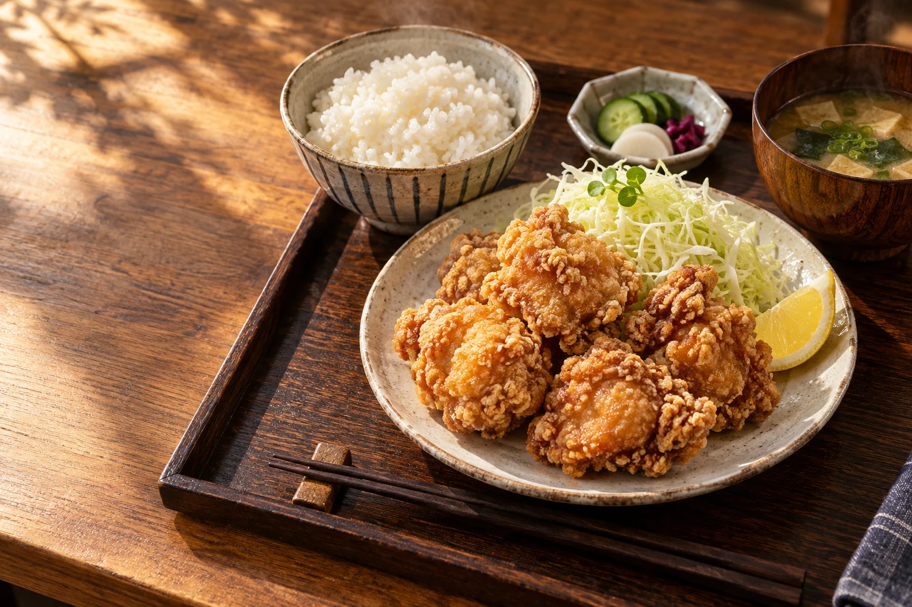
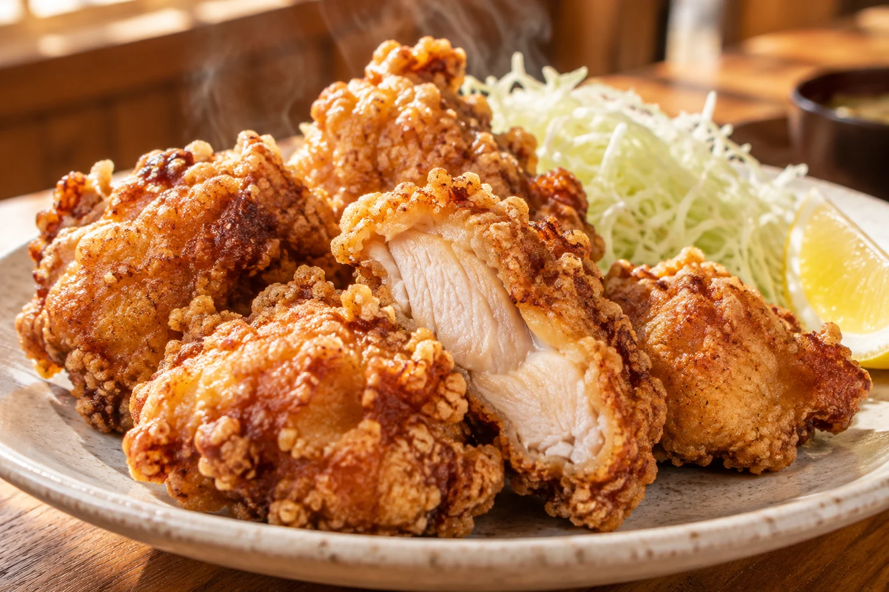

CPI WEBSITE COLLECTION
CPIのサイトプレビュー
飲食店サイトとコーポレートサイトをご覧いただけます。それぞれ、動きの違いを比較できます。
飲食店サイト｜CPI食堂（仮称）
唐揚げなどの定食屋を想定した新しいご提案です。料理の写真、生成り色と朱赤、明朝体の文字組で、親しみのある食卓を表現しました。

動きのある版
スクロールで近づく料理写真、背景の移動、流れる文字で、食欲を誘う構成です。
飲食店・動的版を見る →
アニメーション控えめ版
同じデザインと内容で、短いフェードを中心に。ゆっくり読める構成です。
飲食店・控えめ版を見る →店名は仮称、写真・メニューは提案用です。価格・店舗所在地・営業時間は未確定のため掲載していません。
コーポレートサイト
掲載情報と導線は共通です。静止版とアニメーション版をご用意しています。
アニメーションなし
余白・写真・明朝体の文字組だけで信頼感を組み立てた静的な構成です。
静止版を見る →アニメーションあり
フェード、スクロール表示、控えめなパララックスを加えた構成です。
演出版を見る →写真は提案確認用の生成イメージです。公開前に株式会社CPIの実際の人物・オフィス・外観写真へ差し替えてください。